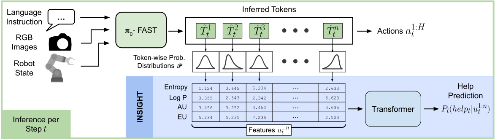
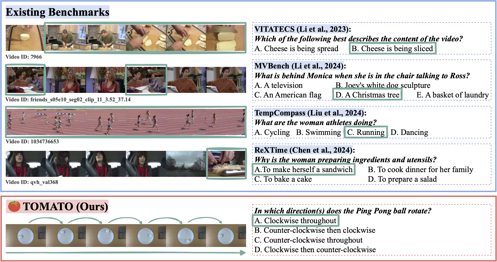
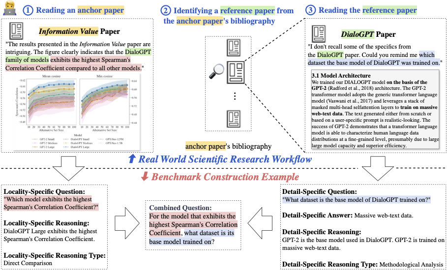

|
Ph.D. Student @ Inquisitive Robotics Lab
Email: ziyao.shangguan [at] yale [dot] edu Google Scholar / GitHub / LinkedIn / X |
I am a second-year Ph.D. student in the Inquisitive Robotics Lab at Yale University, advised by Prof. Tesca Fitzgerald. My research interest lies in interactive robot learning, particularly in enabling robots to reason over human intentions and to learn from human interactions adaptively. My current projects focus on utilizing Vision-Language-Action Models to enhance robotics systems.
Prior to my Ph.D. program, I was a master's student in Computer Science at Yale University, advised by Prof. Tesca Fitzgerald and Prof. Arman Cohan. I received my bachelor's degree in Mathematics & Computer Science from New York University. During my undergraduate years, I was affiliated with NYU Robotic Design Team, advised by Prof. Haldun Hadimioglu.
| Apr '26 | CPTCoder is accepted to ACL 2026 System Demonstrations. |
| Jan '26 | INSIGHT is accepted to ICRA 2026. |
| Dec '25 | Received Yale Computer Science department Distinguished Teaching Award. |
| Sep '25 | MedTutor is accepted to EMNLP 2025 System Demonstrations. |
| Sep '25 | Started my Ph.D. program at Yale. |
| Apr '25 | Presented 🍅TOMATO at the Open Multimodal Gathering Workshop at National University of Singapore. |
| Jan '25 | MMVU is accepted to CVPR 2025. |
| Jan '25 | 🍅TOMATO is accepted to ICLR 2025. Let's catch up in Singapore! 🇸🇬✨ |
| Sep '24 | M3SciQA is accepted to EMNLP 2024. |
| Sep '23 | Started my master's program at Yale. |
* denotes equal contributions.
|
 |
|
|
 |
Ziyao Shangguan*, |
|
 |
|
Yale University — Graduate Teaching Fellow
New York University — Teaching Assistant